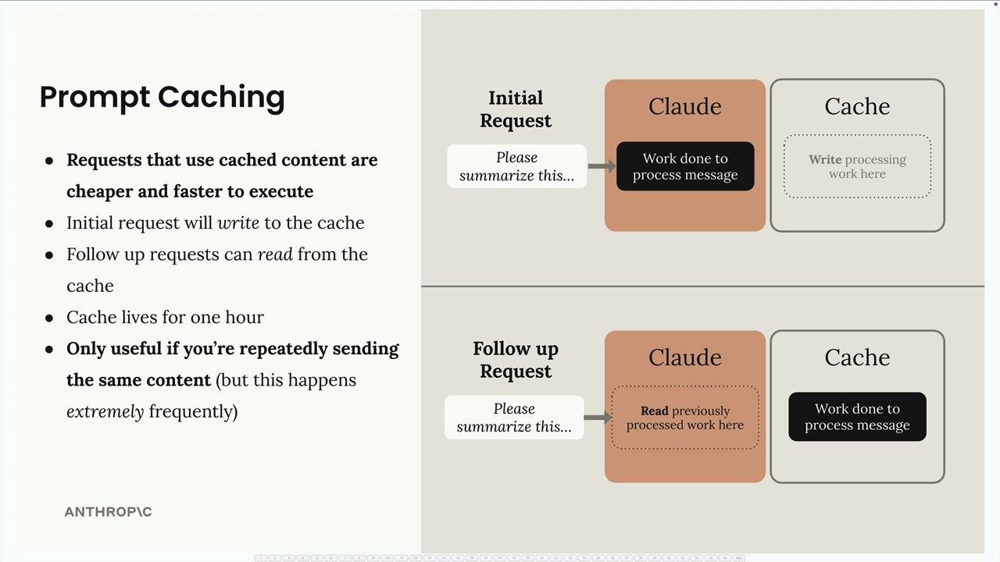

Prompt caching в коде
Чему научитесь
Видео 7:21 и текст урока
К концу урока вы сможете:
- кешировать описания инструментов и system prompt;
- читать
cache_creation_input_tokensиcache_read_input_tokens; - предсказывать, что сбросит кеш.
Видео и текст урока.
Смотреть урок на Skilljar Prompt caching in action · 7:21Prompt caching — мощная оптимизация, которая делает запросы к API быстрее и дешевле, когда вы снова и снова отправляете одинаковое содержимое. Разберём, как эффективно внедрить его в приложение.

Как работает prompt caching
Когда prompt caching включён, первый запрос записывает содержимое в кеш, который живёт час. Следующие запросы читают из кеша, не обрабатывая то же содержимое снова. Это особенно ценно, когда вы отправляете:
- большие system prompt (например, промпт помощника по коду на 6 тысяч токенов);
- сложные схемы инструментов (около 1,7 тысячи токенов на несколько инструментов);
- повторяющееся содержимое сообщений.
Ключевая мысль: кеш помогает, только если вы повторно отправляете одинаковое содержимое, — но во многих приложениях так происходит постоянно.
Кешируем схемы инструментов
Чтобы закешировать схемы инструментов, добавьте поле cache_control к последнему инструменту в списке. Правильный способ — не меняя исходные описания инструментов:
if tools:
tools_clone = tools.copy()
last_tool = tools_clone[-1].copy()
last_tool["cache_control"] = {"type": "ephemeral"}
tools_clone[-1] = last_tool
params["tools"] = tools_clone
Здесь создаются копии и списка инструментов, и последней схемы, прежде чем добавить поле кеширования. Можно было бы прямо изменить tools[-1]["cache_control"], но копирование защищает от проблем, если позже вы поменяете порядок инструментов.
Кешируем system prompt
System prompt для кеширования нужно оформить как текстовый блок с cache_control:
if system:
params["system"] = [
{
"type": "text",
"text": system,
"cache_control": {"type": "ephemeral"}
}
]
Так system prompt из простой строки превращается в структуру, поддерживающую кеширование.
Как ведёт себя кеш
При запросах с кешем в ответе видны разные картины использования:
- первый запрос:
cache_creation_input_tokens=1772— Claude пишет в кеш; - повторные запросы:
cache_read_input_tokens=1772— Claude читает из кеша; - изменённое содержимое: снова появляются токены создания кеша.
Кеш крайне чувствителен: изменение даже одного символа в инструментах или system prompt сбрасывает весь кеш этой части.
Порядок и точки кеширования
В одном запросе можно поставить несколько точек кеширования. Порядок важен:
- инструменты (если есть);
- system prompt (если есть);
- сообщения.
Если поменять system prompt, но оставить те же инструменты, вы увидите частичное чтение кеша (для инструментов) и запись в кеш (для нового system prompt). Такое дробное кеширование означает, что платить приходится только за обработку изменившихся частей.
Практические соображения
Prompt caching эффективнее всего, когда у вас:
- одинаковые схемы инструментов от запроса к запросу;
- стабильные system prompt;
- приложение делает много запросов с похожим контекстом.
Помните, что кеш живёт только час, — он рассчитан на приложения с довольно частыми обращениями к API, а не на долгое хранение.
Дальше
Последний урок блока — Files API и инструмент выполнения кода.
Оригинал урока: Prompt caching in action.